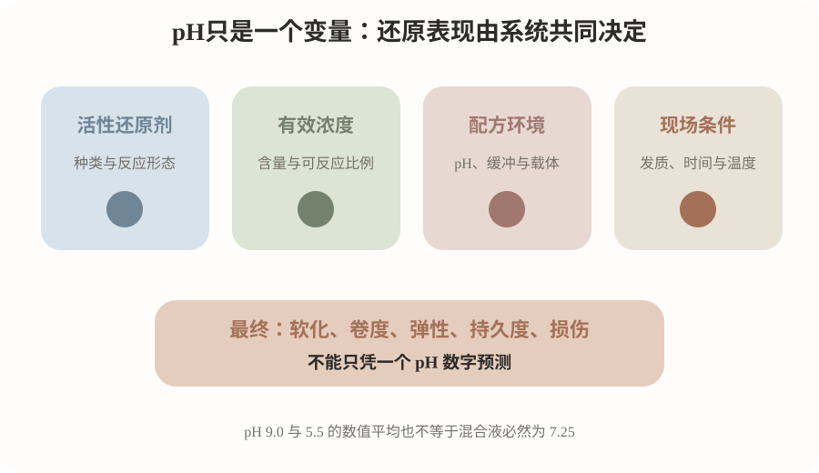
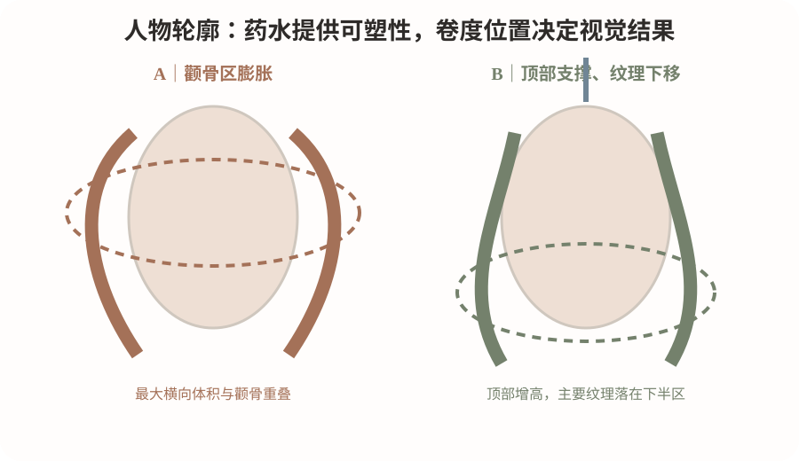
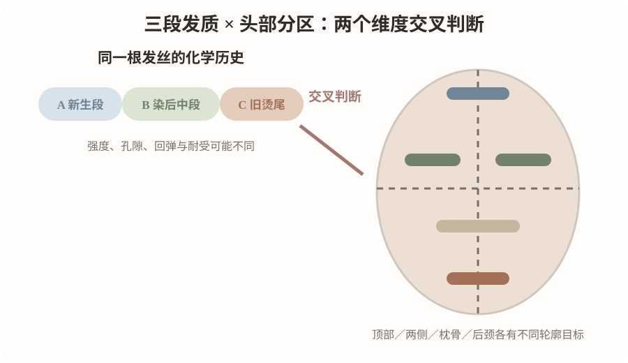

2026-10-14
今日核心问题：两瓶都标示 pH 8.0 的烫发还原剂，能否据此判断它们药力相同，并直接使用相同软化时间？
01 / 热烫专业理论 · 雾蓝
毛发皮质层中角蛋白相关的二硫键（—S—S—）提供重要的共价交联。烫发中的巯基类还原剂与部分二硫键发生反应，降低原有形态约束；随后卷杠规定曲率，水分与加热改变纤维的热机械响应，氧化剂帮助重新建立部分二硫键。这里的“部分”非常重要：
软化不是越多越好，氧化也不意味着毛发完全回到处理前。
TGA
是巯基乙酸（thioglycolic acid）的常用缩写；在配方中可能以巯基乙酸盐等形态存在。另一些产品采用
半胱胺（cysteamine）
。不同巯基化合物的酸碱行为和配方条件不同，因此不能用两瓶产品的标示 pH 直接给药效排座次。
“CA”并不是所有品牌通用的化学成分名称。
若你使用的 CA 产品标示为 pH 5.5、巯基乙酸 2%，说明需要按照其真实 INCI、技术说明书及含量理解，不能仅凭“CA”三个字判断它就是半胱胺，也不能因为 pH 较低就把它视为“零还原作用”。
化学端
活性还原剂、浓度、pH、缓冲能力、载体与渗透
现场端
涂放顺序、起始接触时间、温度、水分、毛束耐受状态
操作边界：
未经厂家明确许可，不要把两款烫发还原剂自行调配、混合或改变中和流程。即使测到混合后 pH，也不能据此证明化学稳定性和毛发安全性。
为什么不同发质反应不同？
细软发、粗硬发、漂染发和旧烫发尾具有不同的发径、皮质完整性、毛鳞片状态和既往化学损伤。相同药水在不同发段的扩散与力学结果可能不同；同样的“试拉伸长度”，也可能掩盖完全不同的湿态强度。必须结合卷绕测试、湿态回弹和断裂风险判断。

02 / 科研证据 · 雾蓝
本次以 2026 年 10 月 7—14 日为优先检索范围，未查到能直接建立“不同商品配方、同 pH 时药效相同”的高质量新原始研究。下列采用更有直接操作价值的旧研究，明确来源与适用边界。
① 1989｜Contributions to the chemistry of human hair: III. Protein chemical aspects of permanent waving treatments
《International Journal of Cosmetic Science》｜原始实验，Hilterhaus-Bong 等｜
查看 DOI
核心结论：
特定实验中，还原时间延长会影响后续二硫键重新形成及含硫成分流失；在所测 pH 7.5—10.0 条件下，pH 9.0 的胱氨酸断裂量最大。
证据：中。
化学指标直接，但为较早期且条件限定的实验。
能支持：
不能只考虑最终卷度，也要考虑反应时间和结构代价。
不能证明：
所有品牌的 pH 9.0 都是最强、所有人都应使用它。
② 2026年3月｜Permanent Waving Efficiency and Hair Protective Effects of a Low-Viscosity Thioglycolate-Based Perm Technique on Hair Damaged by Cysteamine-HCl
《Asian Journal of Beauty and Cosmetology》24(1):47–57｜Lee & Bae｜原始毛束实验｜
摘要与实验说明
核心结论：
以半胱胺盐酸盐制备的受损毛束为对象，比较 pH 8.9 乳霜还原剂 15 分钟，与先 10 分钟乳霜、后 5 分钟不同 pH 凝胶剂的工艺；不同实验组在卷曲效率、强度和损伤程度之间各有差异。
证据：中。
有卷度、拉伸和 SEM 指标，但单项毛束研究。
能支持：
配方载体与两阶段处理流程也影响结果。
不能证明：
pH 4.5 或 7.0 适合所有受损发，更不能自行拼接不同品牌流程。
③ 2025年3月刊期｜The swelling behaviour of hair studied through the structural change of keratin protein during the permanent waving treatment
《Biophysical Chemistry》318:107364｜Togashi 等｜原始结构实验；2024-11-30 在线发表｜
PubMed
核心结论：
研究在 1.0 mol/L 巯基乙酸铵、pH 9.25 的指定条件下，用 SAXS、固体 NMR 等观测到中间丝结构从还原早期已发生变化；后续氧化可使部分结构恢复。
证据：中—强（机制层面）。
结构测量比较直接；真人热烫外推有限。
能支持：
不同上药起始时间是真实的工艺变量。
不能证明：
所有发质都应按 pH 9.25 操作。
以上归纳有意区分“论文在指定实验体系中看到什么”与“可否直接写进门店 SOP”。
03 / 门店实战案例 · 燕麦
案例真实性说明：
今天没有可核验且获授权的顾客完整施工档案，因此采用
真实门店常见条件构建的模拟教学案例
，不冒称为实际已完成的作品。以下参数是诊断与练习框架，不能代替实际毛束检测。
观察项目
现场资料
人物条件
35岁；偏宽圆方脸；颧骨略宽，顶部扁、后枕稍平、颈部偏短；希望年轻、利落而松弛。
长度与层次
锁骨下约 5 cm；中低层次，发尾略沉；发量中等偏少，发丝偏细软，自然卷轻微。
化学历史
头皮附近约 8 cm 新生段 A；中段染过 6 度棕、偏干 B；发尾约 5 cm 有旧烫及毛躁 C。只是教学假设，长度可能交叠。
生活习惯
每天吹整 5 分钟以内；拿来的参考图是精修过的法式松弛 S 弯。
关键风险
C 段湿态回缩较差；若强求全头均匀卷度，可能加重断裂和毛躁。
第一判断：不是“给三段选三个 pH”，而是先问能不能烫
分开检查 A／B／C 的湿态拉伸回缩、缠结、断裂、孔隙差异和既往服务记录。对 C 段先做离体毛束测试；若结构失稳、湿拉异常或易断，
优先避烫或修剪
。不允许通过“更低 pH = 绝对保护”替代实际风险判断。
第二判断：目标卷形应服从轮廓
设计为
顶部轻支撑、颧骨处控制横向宽度、下颌附近逐渐开始可见 S 弯、发尾温和收束
。保留必要的底线密度，脸周剪裁连接中层，避免为了“看起来轻”把细软发盲目打得更碎。
第三判断：还原与时间要按产品和发段管理
先核对还原剂标签的真实活性成分与浓度、厂家规定 pH 范围、适用发质以及是否允许分区操作。A 段与 B 段分别试束；C 段根据风险可能不处理。
每一分区记录第一片上药、最后一片上药与冲洗时间
，而非“全头涂完统一按 15 分钟计算”。
软化终点结合试卷形、湿态回弹、手感和损伤信号综合判断。完成还原后按配套流程冲洗；统一吸水方式控制表面游离水，保持发片厚度与张力一致。加热及氧化必须遵守
具体药剂—设备配套说明
，本案例不假设 60°C、100°C 或 110°C 是通用安全标准。
失败预案
若顶区支撑不足，先检查毛流、剪裁、有效卷入长度和吹干方向，不能立刻认定药水不够强。若发尾毛躁或失去弹性，应停止追加药力和高温，评估修剪与温和整理，不在当天盲目重复化学处理。
04 / 人物美感 · 灰粉杏
在这个偏宽颧骨、顶区略扁的模拟人物上，如果明显弯曲和最大蓬松量堆在颧骨平面，正面容易显宽。更稳妥的视觉路线是：顶部有轻高度；脸颊外侧相对顺；第一明显弯从下颌附近逐渐开始，主要纹理分布在耳下到肩颈区域。
正面看
顶区高度、脸旁最大宽度是否与颧骨重叠；发尾密度是否保留。
侧面与45°看
后枕是否塌陷；第一弯是否与下颌轮廓相接；后颈是否堆积。
换人就要改变：
如果是窄长脸，可考虑让侧区较早出现柔弯，以平衡纵向比例；如果发量粗厚，先控制底部量感，避免把所有区域都加大卷度。

本课配三张原创教学示意图，并与文字逐一对应：
图1用于解释核心科学或几何原理；图2用于人物美感与轮廓重心比较；图3用于头部分区、排杠方向与区域衔接。
图1｜这张图看什么：活性还原剂、有效浓度、配方缓冲/载体和现场条件共同决定结果；pH不能单独等同软化百分比。
图3｜这张图看什么：A把横向体积堆在颧骨附近；B适当抬升顶部并把明显纹理重心下移。它是抽象轮廓示意，不是真人前后对比。
图2｜这张图看什么：先辨别A新生段、B染后中段、C旧烫发尾是否适合再次处理，再把纵向发段判断与顶部、两侧、枕骨、后颈的空间设计结合。
所有图片均为教学示意，不是真实顾客改造前后、科研原图或可直接复制的施工处方。
05 / 排杠拆解 · 鼠尾草绿
区域
教学角度参考
操作目标与常见错误
顶部
70–90°
按真实毛流形成轻支撑。防止根部过紧造成压根、炸根。
枕骨
45–75°
建立后脑圆度，与顶区平滑连接；防止上下层断层。
两侧
30–60°
控制颧骨外侧最大体积，顺脸周方向卷入；防止左右流向互相顶撞。
后颈
0–30°
下摆不过度堆积；旧烫脆弱段可避烫或修剪；防止尾部乱翘。
刘海/脸周
不设固定角度
先确定第一弯位置、额角旋涡和落点；注意发尾折痕。
所有角度是教学经验候选，均以局部头皮切线为 0°，不是来自临床论文的最优解。中发可在假头/毛束上从 20–26 mm 的实测杠体外径候选入手，但不是所有设备“杠号”的等价换算。实际应根据有效卷入长度、发片厚度、圈数及目标卷幅决定。
操作顺序建议：
先画第一弯和最大体积点 → 再定长度与层次 → 定头部各区方向 → 检查纵向 A/B/C 化学历史 → 最后确认哪些发段可以卷、可以还原。不要先摆满杠子，才倒推人物设计。

06 / 顾客沟通 · 燕麦
先问五件事：
最想改善顶部还是脸旁？每天愿意整理多久？半年内烫染漂记录？参考图是否经过电棒造型？如果旧发尾不适合再次烫，能接受修剪或保留自然状态吗？
“你喜欢的不是整头都很卷，而是顶部有一点高度，脸旁边比较顺，从下颌开始有松弛的弯。我们先检查一下以前烫过的发尾，看看能不能安全做；如果这部分弹性已经不足，我不会为了把它烫卷再加大药力。
我会把能够处理的部分做出自然流向，再用层次和吹整把整体连起来。你在照片上看到的完整效果，可能还包含电棒或吹风造型，我也会提前告诉你自然吹干后大概是什么状态。”
为什么这么说？
把“要不伤发”转成真实风险边界，把“自然卷”转成卷度位置和日常打理预期；避免以 pH 低或产品包装文案承诺“绝不损伤”。
07 / 先练后看答案 · 互动学习
桌上有两款标称 pH 8.0 的还原剂。A 是巯基乙酸盐体系，B 是另一个巯基体系。顾客新生段偏细软，中段染后干燥，发尾曾烫过。你能否说“A 和 B 药力相同，只要全头统一计时就可以”？如果不能，你首先核对哪些信息？
点击展开参考答案与思路
不能。
首先核对真实有效成分、浓度、厂家说明书、允许温度与定型步骤；其次对 A/B/C 发段分别判断是否适合处理；最后用离体试束对目标卷形、湿态强度和洗后回弹做对照。
正确思考路径：
配方信息 → 发段安全边界 → 分区计时 → 目标美感 → 排杠技术 → 检查成品与洗后表现。pH 相同只意味着一个读数相同，并不意味着两瓶产品的整体反应能力相同。
容易误判：
把“低pH”与“绝对安全”划等号，或者把“手拉得长”直接当成二硫键断裂百分比。
08 / 今日最值得验证的一件事 · 毛束实验
这是离体毛束上的产品整体对比，不是用来证明 pH 或某一种化学成分具有单独因果作用。
不得在顾客头上试；不自行混配药水。
项目
执行标准
目的
检验“pH 接近”是否足以保证相同的卷度、洗后回弹和手感。
材料
同批未处理天然毛束 6 束（每组3束），实测外径一致的杠子、电子秤、pH计/试纸、拍照标尺、两款可用于该发质的正规产品及各自配套定型剂；防护手套、护目镜。
唯一比较因素
产品 A vs 产品 B（
比较的是整套产品及其厂家工艺
）。
控制因素
毛束来源、长度、重量、分束厚度、卷杠、张力、冲洗水温、拍摄距离、洗发方式一致。各产品的接触时间与加热流程以各自厂家规定为准，并单独记录。
步骤
1. 记录商品名、活性成分、标示pH与测量pH；2. 各分配3束并拍基准图；3. 按各自批准工艺独立处理与氧化；4. 不交叉使用配套产品；5. 24小时、洗后1次和5次分别拍照与记录。
观察指标
第一明显弯距毛束根端的距离、最大弯幅、24小时回缩、洗后卷径变化、毛躁评分1–5、断丝数和手感。
结论边界
如果工艺条件不同，就不能把差异归因于还原剂本身，更不能计算“pH每升高0.5，软化多10%”。
标准化结果记录
分组
pH实测
24h弯幅
洗5次弯幅
毛躁1–5
A1–A3
待填
B1–B3
待填
安全：在通风良好的专业场所按标签佩戴防护用品；如某产品厂家工艺与本测试场景不兼容，不强行采用统一条件，应终止对应比较。测试只能逐渐形成该产品、该设备和特定发质的本店参考，不外推到全部顾客。
今日结论卡
最重要的原理：
pH 改变还原化学环境，但不能单独代表药水强度，也不能单独预测最终卷度。
最容易犯的错误：
把两个 pH 值算平均，或凭固定“软化百分比”给混合发质套一套参数。
明日观察：
同一位顾客 A 新生段、B 染后中段、C 旧烫发尾的湿态回弹是否一致？